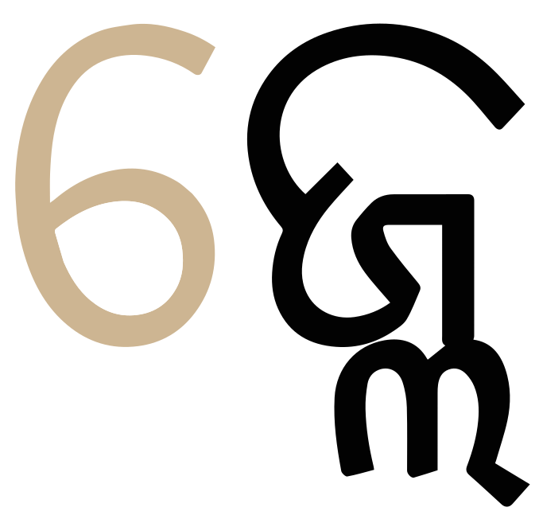
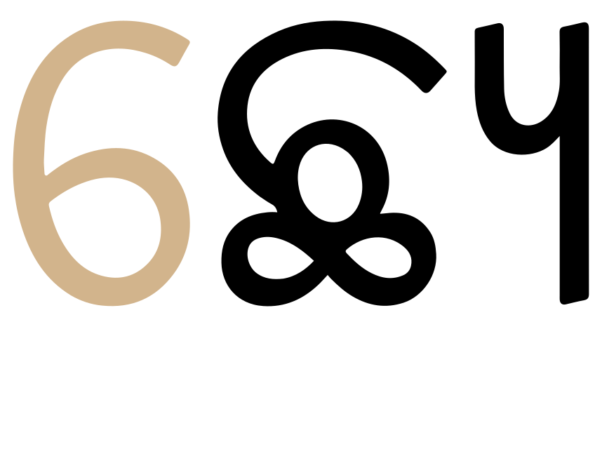
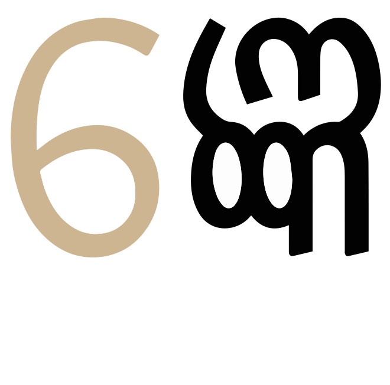
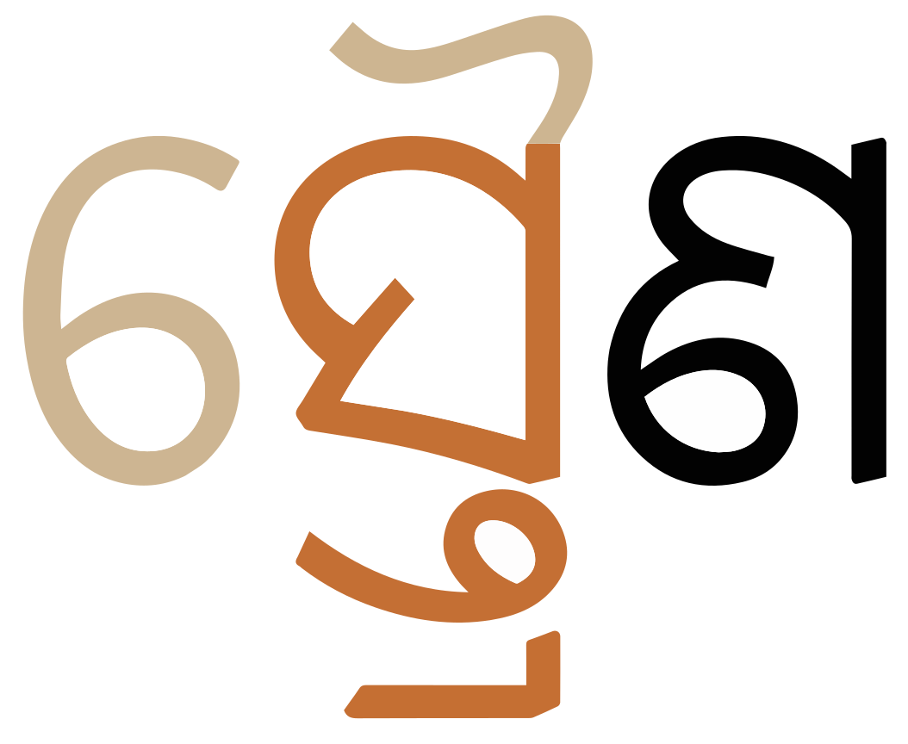
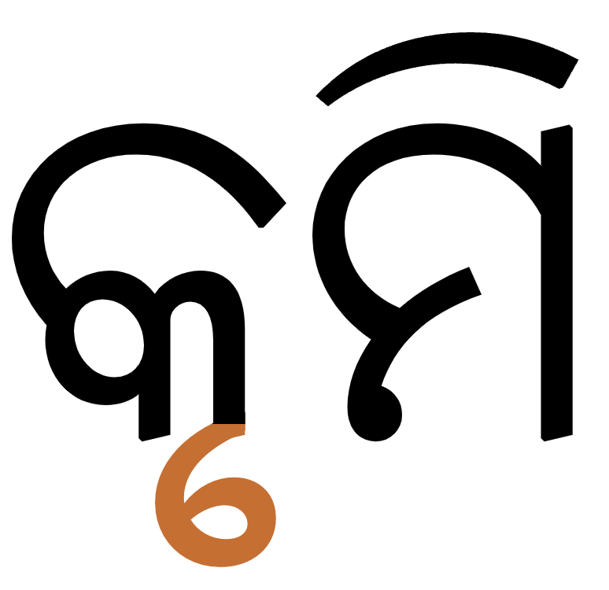
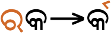
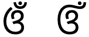
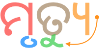
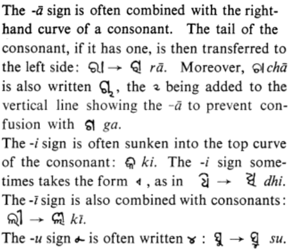
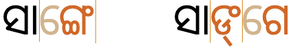

This page brings together basic information about the Odia (Oriya) script and its use for the Odia language. It aims to provide a brief, descriptive summary of the modern, printed orthography and typographic features, and to advise how to write Odia using Unicode.
The Oriya script ( ଓଡ଼ିଆ ଅକ୍ଷର ) is the official orthography used to write the Odia language of the Odisha (Orissa) state in India, as well as minority languages such as Khondi and Santali, and a number of Dravidian and Munda minority languages spoken in that region.u,487 It is also used in Orissa for transcribing Sanskrit texts.
The Oriya script is a descendant of the Brahmi script, via Siddham. Earliest recorded instances of the script go back to the 11thC. The language was initially written in the Kalinga script, from which the Oriya script developed.
The rounded shapes of the letters, especially the top bar, are ascribed to the practise of writing on palm leaves, where rounded lines are less likely to split the leaf than straight ones.
A cursive version of the script, called Karani (କରଣୀ ଅକ୍ଷର), was used by scribes in the royal courts.
The language and script were previously referrred to in English as Oriya, but in 2011 India changed the spelling to Odia in the constitution.sl11
Unicode 17 has 1 dedicated Oriya block, comprising 93 characters.
Vowels have short lengths only, although there are vestigial orthographic letters for long sounds that now represent alternatives for the short sounds. Additional symbols are used to express vowel length.
Vowels may be nasalised, using the candrabindu diacritic.
Vowel absenceVowel absence is indicated using conjunct forms, a visible combining mark, or dedicated syllable-final combining marks. There are no dedicated medial consonant characters.
0B4D is used to kill the inherent vowel and to form conjuncts. A visible virama is used for borrowed words.
Conjunct forms occur as stacks using subjoined forms, usually for the second character, but sometimes for the initial. Certain clusters use fused forms, and a couple are conjoined. Initial RA is rendered as a reph over the top right of the following consonant.
Syllable codas may be written using 2 dedicated combining marks (anusvara & visarga). Velar consonant cluster initials may be written either using a regular character or using anusvara.
ⓘ represents the inherent vowel. Diacritics are added to the vowels to indicate nasalisation (not shown here).
Inherent vowel
କ
kɔ
ɔ following a consonant is not written, but is seen as an inherent part of the consonant letter, so kɔ is written by simply using the consonant letter. This vowel sound is transcribed as ad.
eg.
ଗରମ
ଗ,ର,ମ
Since Odia consonants normally include an inherent vowel, the orthography has ways to indicate a consonant that is not followed by a vowel sound. See novowel.
Post-consonant vowels
Post-consonant vowels are written using 9 combining marks (vowel signs). There is 1 pre-base form, and 3 circumgraphs.
In principle, there are no multipart vowels, however the 2 circumgraphs are decomposed into 2 parts each.
Vowels have short lengths only, although there are vestigial orthographic letters for long sounds that now represent alternatives for the short sounds.
Vowels may be nasalised, using the candrabindu diacritic.
All vowel signs are stored after the base consonant, and the rendering process puts them in the correct place for display. Conjuncts are treated as indivisible units when it comes to rendering vowel signs, meaning that pre-base vowel signs and left-side glyphs of circumgraphs are rendered before the conjunct as a whole (see prebase).
Six vowel signs are spacing marks, meaning that they consume horizontal space when added to a base consonant.
Plain vowel signs
କି
ki
Odia uses the following dedicated combining marks for simple vowels.
ି,ୀ,ୁ,ୂ,େ,ୋ,ା
eg.
କୁହୁଡ଼ି
ଖେଳିବା
The 'primary' vowels have 'short' and 'long' written forms that hark back to the earlier Indic script origins, but modern Odia phonetics don't distinguish between long and short vowel sounds.
The short i vowel sign has 2 different shapes (see i_shaping).
Diphthongs
Like several other Brahmi-derived scripts, the following 2 diphthongs are written using a single character each.
ୈ,ୌ
eg.
ତୈଳ
ଚୌଦ
See also the 2 lengthening marks, which may occur in decomposed text.
Pre-base vowel sign
କେ
ke
େ
The sound e is written using 0B47, which appears to the left of the base consonant letter or conjunct.
eg.
ମେଘ
This is a combining mark that is always stored after the base consonant or conjunct, ie. the code points follow the order in which the items are pronounced. The rendering process places the glyph before the base consonant without changing the order of the code points. The following shows the sequence of code points that make up the word just above.
ମ,େ,ଘ
Conjuncts are treated as indivisible units when it comes to rendering vowel signs, meaning that pre-base vowel signs are rendered before the conjunct, even though pronounced after the consonants.
eg.
ଇନ୍ସ୍ପେକ୍ଟର୍
ନ୍ସ୍ପେ,ନ,୍,ସ,୍,ପ,େ
fig_prebase shows 3 sets of consonant clusters, each followed by e when spoken, but the vowel sign appears to the left of each cluster.



Three examples of a prebase vowel, pronounced after a consonant cluster, but rendered to the left of the conjunct.
Circumgraphs
କୋ
ke
Three vowels are produced by a single combining character with visually separate parts, that appear on different sides of the consonant onset.
ୋ,,ୈ,ୌ
eg.
କୋଡ଼ିଏ
ତୈଳ
ପୌତ୍ର
Like pre-base glyphs, these do not split a conjunct, but instead they treat the conjunct as a single unit and place glyphs either side of it.
eg.
ସ୍ତ୍ରୈଣ
ସ୍ତ୍ରୈ,ସ,୍,ତ,୍,ର,ୈ

A circumgraph vowel: a single code point with glyphs on two sides of the consonant cluster after which it is pronounced.show composition
ସ୍ତ୍ରୈଣ
All 3 of these circumgraphs can be written as a single character, or as two. See vs_encoding.
Composite vowel signs
The only composites occur when the circumgraphs are encoded as pairs of characters (see vs_encoding).
The following 'lengthening marks' may be used to create vowel sounds as part of a decomposed circumgraph, although the Unicode Standard recommends the use of the precomposed forms.
In Sanskrit, 0B3D can be used to show vowel elongation,ws
Nasalisation
Vowels may be nasalised using ଁ or ଂ.
eg.
ମୁଁହ
ମ,ୁ,ଁ,ହ
ମାଂସ
ମ,ା,ଂ,ସ
Where 2 vowels appear together, the nasalisation sign is rendered above the second.
eg.
ଧୂଆଁ
ଧ,ୂ,ଆ,ଁ
Standalone vowels
ଇ,ଈ,ଉ,ଊ,ଏ,ଓ,ଅ,ଆ,,ଐ,ଔ
Odia represents standalone vowels using a set of independent vowel letters. The set includes a character to represent the inherent vowel sound, ɔ. It is relatively common for these independent vowel letters to appear within a word in Oriya.
eg.
ଅକ୍ଷର
ଔଷଧ
ଲେଖାଏଁ
ଉଇକିପିଡ଼ିଆ
Vowel sounds to characters
This section maps Odia vowel sounds to common graphemes in the Oriya orthography.
Dependent (post-consonant) and standalone vowel graphemes are labelled.
Plain vowels
i
dependentି
standaloneଇ
dependentୀ
standaloneଈ
u
dependentୁ
standaloneଉ
dependentୂ
standaloneଊ
e
dependentେ
standaloneଏ
o
dependentୋ
standaloneଓ
ɔ
Inherent voweleg. ଅକ୍ଷର
standaloneଅ
a
dependentା
standaloneଆ
Diphthongs and other combinations
ɔi
dependentୈ
standaloneଐ
ɔu
dependentୌ
standaloneଔ
Nasalisation
̃
ଁ
Vocalics
ୃ
Only one vocalic is regularly used, in vowel sign form, in modern Odia.

A vocalic vowel sign.show composition
କୃମି
Other vocalics exist in the script, in independent and vowel sign forms, but are used for Sanskrit transcriptions.
ଋ,ୠ,ୄ,ଌ,ୢ,ୡ,ୣ
Vowel absence
Vowel absence principally occurs either when a consonant is a syllable coda, or when a consonant is part of a consonant cluster.
Given that consonants normally include an inherent vowel, the orthography needs a way to indicate when a consonant is not followed by a vowel.
Follow these links for more information.
Create a conjunct. There are a number of possibilities here:
Stacking: Reduce a non-initial consonant in size and shape and position it below the first.
Conjoining: Two consonants sit side by side, but the second consonant has a special shape.
Ligation: Create a fusion of adjacent letter shapes, where it may be difficult to identify one or more of the components.
The letter RA has its own idiosyncratic way of combining with other consonants, whether it precedes or follows them.
Show a visible virama below the consonant with no following vowel sound.
Consonant clusters that are represented by conjunct forms use the halant between consonants to invoke the shape changes. If the font has the glyphs needed to produce the conjunct, the halant is hidden (see clusters).
Conjunct formation
To produce a conjunct, 0B4D is added between the consonants in the cluster. The font hides the glyph automatically.
The overwhelming majority of conjuncts in Odia are achieved by subjoining a reduced form of the non-initial consonant below the initial.
ହ,୍,ନ,ହ୍ନ
ଳ,୍,ପ,ଳ୍ପ
କ,୍,କ,କ୍କ
Examples of stacked conjuncts.
In most cases the non-initial consonant is just reduced in size, but in some cases the shape is changed, either by removing the circular top line, or in a more fundamental way.
କ,୍,ତ,କ୍ତ
କ,୍,ଢ,କ୍ଢ
Stacked conjuncts where the subjoined shape is significantly different from the normal shape.
However, when TA is the initial consonant, it is sometimes the initial that is reduced and subjoined. In other combinations, however, it retains its full form.
ତ,୍,କ,ତ୍କ
ତ,୍,ନ,ତ୍ନ
Stacked conjuncts with an initial TA. The TA may be subjoined in some combinations.
RA in clusters
When RA occurs in a cluster, either as a medial consonant or a coda followed by another consonant, there are special rules for rendering. See medial_ra and ra_coda for details.

rkɔ
An initial RA in a cluster is rendered as a superscript over the following consonant.
Ligated forms
Certain combinations of consonants form conjuncts by producing a merged glyph one or both of the original letters may be unrecognisable.
ଜ,୍,ଞ,ଜ୍ଞ
ତ,୍,ତ,ତ୍ତ
କ,୍,ଷ,କ୍ଷ
Clusters that fuse into forms different from their original component shapes.
Some letters tend not to stack, but sit alongside the initial consonant in the cluster.
ତ,୍,ୟ,ତ୍ୟ
ତ,୍,ଯ,ତ୍ଯ
ତ,୍,ଯ,ତ୍ଯ
Conjoined letters for the clusters tʤ, and tj, respectively (top to bottom).
The conjoined forms for j and ʤ are identical in some fonts, as shown in the first two lines above. In other fonts, ʤ is subjoined, as seen in the 3rd line.
Observation: Fonts that stack ʤ include Noto Sans Oriya, Baloo Bhaina 2, and Kalinga. Those that conjoin include Noto Serif Oriya Oriya MN, Oriya Sangam MN, and Nirmala UI.
In an unusual combination of consonants, the cluster may be shown using a visible halanta, rather than as a conjunct. The halanta is also left showing for borrowed words.d,404 Example:
ତ,୍,ଞ,ତ୍ଞ
A consonant cluster that shows a visible virama, rather than creating a conjunct.
Observation: Noto, Nirmala, and Kangila fonts all show the halanta below the initial consonant in the first example at fig_conjoined_virama, but Oriya MN and Oriya Sangam MN fonts don't show it.
The halanta can be made visible by following it with 200C (see joiner).
Triple-consonant clusters
Oriya has a number of clusters involving 3 consonants. For example, the following words contain triple-consonant clusters. As always, click on the example to see the composition.
ପୂର୍ଣ୍ଣ
ର୍ଣ୍ଣ,ର,୍,ଣ,୍,ଣ
ତୀକ୍ଷ୍ଣ
କ୍ଷ୍ଣ,କ,୍,ଷ,୍,ଣ
ଚନ୍ଦ୍ର
ନ୍ଦ୍ର,ନ,୍,ଦ,୍,ର
Using ZWJ & ZWNJ
It's possible to prevent the formation of conjuncts, and force a visible virama, using 200C ( ZWNJ ).
କ,୍,କ,,କ୍କ
କ,୍,,କ,କ୍କ
Use of ZWNJ and ZWJ to control conjunct rendering.
Visible virama
Odia uses 0B4D, called halant, (the Odia equivalent of the Sanskrit virama) to indicate that the inherent vowel is not pronounced after a consonant, eg. କ୍ explicitly represents just the sound k.
Word-final consonants without a following inherent vowel use the halant, If there is no halant, the vowel is pronounced, eg. compare
ଫୁଲ
ଇ-ମେଲ୍
A visible virama may also appear if the font doesn't contain the necessary glyphs to support a conjunct (see conjoined).
Consonants
ପ,ବ,ତ,ଦ,ଟ,ଡ,କ,ଗ
ଫ,ଭ,ଥ,ଧ,ଠ,ଢ,ଖ,ଘ
ଚ,ଜ,ଯ, ,ଛ,ଝ
ସ,ଷ,ଶ,ହ,ଃ
ମ,ନ,ଞ,ଣ,ଙ,ଂ
ୱ,ଵ,ର,ଡ଼,ଢ଼,ଲ,ଳ,ୟ
Normal letters are used as final consonants, but the right-hand column lists some additional, dedicated finals.
Basic consonants
Basic consonant sounds in Oriya are written using the following letters. The letters are highly phonetic.
Click on each letter for more details and for examples of usage, especially where more than one sound is indicated.
The letters 0B71 and 0B35 typically occur in subjoined form as medial sounds (see wava).
The velar and palatal nasals only occur in homorganic clusters.d,406
କ୍ଷ is regarded as a letter of the alphabet.
Repertoire extension using nukta
The sounds ɽ and ɽʰ are written by combining 0B3C with an existing consonant.
ଡ଼,ଢ଼
The nukta should always be typed and stored immediately after the consonant it modifies, and before any combining vowels or diacritics.
Unicode also has precomposed forms of these letters, but they decompose under Unicode Normalisation Form C (NFC). Therefore, the Unicode Standard recommends the use of the decomposed sequence.
ଡ଼,ଢ଼
The nukta may also be used to produce other non-native sounds. Wiktionary describes the following:
0B15 0B3C for q.
0B16 0B3C for x.
0B1D 0B3C for ʒ.
0B37 0B3C for ɻ.
Onsets
Clusters of consonant letters at the beginning of an orthographic syllable occur in Odia, and they are handled as described in the section clusters.
Special behaviours include handling of RA at the beginning of an orthographic syllable (see rclusters).
Medial RA
A trailing RA in a conjunct has a fairly regular appearance as a subjoined glyph below the preceding consonant, although that line may join with the preceding letter shape, and therefore cause a slight change to it.
eg.
ବିକ୍ରୀ
କ୍ରୀ,କ,୍,ର,ୀ
WA and VA medials
The letters 0B71 and 0B35 were added to Unicode version 4, and typically occur as medial sounds. The subjoined forms of these characters may look the same. (For a discussion of the possible historical relationship between these characters see Everson/Stonee02).
eg.
ଦ୍ୱାର
ଦ୍ଵୀପ
Observation: The Library of Congress transcription page says that when
ବ
[U+0B2C ORIYA LETTER BA] occurs as the second consonant of a consonant cluster (except when geminated), it is transliterated vloc. It appears, however, that it also keeps the b sound after the letters m and r.
0B35 is described by Wiktionary as "used sporadically for the phonetic Va/Wa as an alternative for the officially recognised letter ୱ, but has not gained widespread acceptance".
Codas
Syllable codas are commonly written using ordinary letters, but there are also a few dedicated symbols in Oriya. At the end of a word, a coda usually has a visible virama attached.
Some special rendering rules apply for a syllable ending in r when it is part of a consonant cluster. See ra_coda.
Two diacritics represent syllable-final consonant sounds.
ଂ,ଃ
RA coda
Like many other Indian scripts, 0B30 at the beginning of a cluster is represented idiosyncratically, and appears as a small, superscript glyph over the top right of the following consonant.
eg.
ବର୍ଷା
ବ,ର,୍,ଷ,ା
Observation: Unlike Devanagari, it appears that the RA doesn't move over a following vowel sign, such as ା [U+0B3E ORIYA VOWEL SIGN AA].
Coda diacritics
According to the Unicode Standard, a nasal coda at the beginning of a consonant cluster can optionally be written as part of a conjunct or using 0B02u16,#G36854.
eg.
ଅଙ୍କ
ଅ,ଙ,୍,କ
ଅଂକ
ଅ,ଂ,କ
However, in Wiktionary a distinction is consistently made between the two spellings, and 0B02 is always transcribed as vowel nasalisation, rather than as a nasal consonant.
eg.
ଇଂଲଣ୍ଡ
ଇ,ଂ,ଲ,ଣ,୍,ଡ
According to Nakanishin,54, a word-final h consonant can also be written using 0B03. In the middle of a word, it causes the following consonant to become lengthened.
Observation: According to Wikipedia, that sound is a h, but according to Nakanishi it is a glottal stop. There are no Wiktionary lemma entries with this character.
Consonant length
Lengthened (geminated) consonants are indicated in the script using the same mechanisms as for consonant clusters.
eg.
ଚିକ୍କଣ
ବଲ୍ଲରି
According to Nakanishi, geminated consonants in the middle of a word can also be written using 0B03.n,54
eg.
ଦୁଃଖ
Observation: There are no instances of this in the term list.
Consonant sounds to characters
This section maps Odia consonant sounds to common graphemes in the Oriya orthography.
To the right, typical subjoined forms are shown after a dotted circle. Oriya also has some unusual conjuncts which are also shown. (Combinations with a trailing r are not shown.)
Sounds listed as 'infrequent' are allophones, or sounds used for foreign words, etc. Light coloured characters occur infrequently.
p
୍ପ ତ୍ପ ମ୍ପconsonantପ
pʰ
୍ଫ ମ୍ଫconsonantଫ
b
୍ବ ବ୍ବconsonantବ
bʰ
୍ଭ ଦ୍ଭ ମ୍ଭconsonantଭ
t
୍ତ ତ୍ତconsonantତ
tʰ
୍ଥ ତ୍ଥconsonantଥ
t͡ʃ
୍ଚ ଚ୍ଚ ଞ୍ଚconsonantଚ
t͡ʃʰ
୍ଛ ଚ୍ଛ ଞ୍ଛ ଶ୍ଛconsonantଛ
d
୍ଦ ଦ୍ଦ ନ୍ଦ ବ୍ଦconsonantଦ
dʰ
୍ଧ ଦ୍ଧ ନ୍ଧconsonantଧ
d͡ʒ
୍ଜ ଞ୍ଜconsonantଜ
୍ଯ ଧ୍ଯconsonantଯ
d͡ʒʰ
୍ଝ ଞ୍ଝconsonantଝ
ʈ
୍ଟconsonantଟ
ʈʰ
୍ଠconsonantଠ
ɖ
୍ଡ ଣ୍ଡconsonantଡ
ɖʰ
୍ଢconsonantଢ
k
୍କ ଙ୍କ ତ୍କconsonantକ
kʰ
୍ଖ ଙ୍ଖconsonantଖ
kʰj
alphabetic letterକ୍ଷ
ɡ
୍ଗ ଙ୍ଗconsonantଗ
ɡʰ
୍ଘ ଙ୍ଘconsonantଘ
q
consonantକ଼Used for loan words.
s
୍ସ ତ୍ସconsonantସ
୍ଷ ଖ୍ଷconsonantଷ
୍ଶconsonantଶ
ʒ
non-native consonantଝ଼Used to produce non-native sounds.
x
non-native consonantଖ଼Used to produce non-native sounds.
h
final aspiration/consonant doublerଃCoda, with this sound according to Wikipedia. According to Nakanishi it is a glottal stop.
ɦ
୍ହconsonantହ
m
୍ମ ତ୍ମ ମ୍ମconsonantମ
n
୍ନ ତ୍ନconsonantନ
ɳ
୍ଣ ଣ୍ଣ ଷ୍ଣconsonantଣ
ɲ
ଜ୍ଞconsonantଞ
ŋ
୍ଙconsonantଙ
nasalisationଂCoda representing a nasal sound according to the Unicode Standard, but only used for vowel nasalisation in Wiktionary.
w
୍ୱ ବ୍ୱconsonantୱ
ʋ
୍ଵ ବ୍ଵconsonantଵ
r
୍ରconsonantର
ru
dependent vocalicୃ
dependent vocalicୄUsually only used for Sanskrit transcriptions.
vocalicଋUsually only used for Sanskrit transcriptions.
vocalicୠUsually only used for Sanskrit transcriptions.
ɽ
consonantଡ଼
ɽʰ
consonantଢ଼
ɻ
non-native consonantଷ଼
l
୍ଲconsonantଲ
ɭ
୍ଳconsonantଳ
lu
dependent vocalicୢUsually only used for Sanskrit transcriptions.
dependent vocalicୣUsually only used for Sanskrit transcriptions.
vocalicଌUsually only used for Sanskrit transcriptions.
vocalicୡUsually only used for Sanskrit transcriptions.
j
୍ୟ ଧ୍ୟconsonantୟ
Symbols
Deceased honorific.0B70 is used before the name of a deceased person.
Om.The symbol for the word Om is produced using 0B13 0B01. It also occurs as a ligated form. If the font doesn't produce the ligated form automatically, the font may produce it if 200D is inserted between the two characters.

A non-ligated combination of O+CANDRABINDU (left) and a ligated form using ZERO WIDTH JOINER (right)..
Encoding choices
Visually, several of the standalone vowels and some vowel signs look as if they could be composed of smaller parts. This section compares approaches and considers the relevance of Unicode Normalisation Form D (NFD) and Unicode Normalisation Form C (NFC) to give guidance on which approach is best.
Encoding vowel-signs
The three circumgraphs can be written as a single character, or as two characters. In 2 of those cases, the second character is a lengthening mark.
Whichever approach is used, the vowel signs must be typed and stored after the consonant characters they surround, and in left to right order.
Independent vowels
The approach listed in the table below is not equivalent when the text is normalised, and therefore only the precomposed approach in the left column should be used.u,487
Use
Do not use
0B06
0B05 0B3E
0B10
0B0F 0B57
0B14
0B13 0B57
In addition to the problem previously mentioned, combinations on rows 2 and 3 don't have the joining bar and so won't display correctly.
Numbers
Digits
Odia has its own set of native digits.
୧,୨,୩,୪,୫,୬,୭,୮,୯,୦
The CLDR standard-decimal pattern is #,##,##0.###. The standard-percent pattern is #,##,##0%.c
ASCII digits may also be used.msg
Fractions
Odia also has a number of pre-decimal characters representing fractions.
୲,୳,୴,୵,୶,୷
These are used additively, with larger values appearing before smaller, eg. 0B73 0B75 represents the value 5/16.u,490
The following is a selection of other examples of contextual shaping and positioning.
Positioning u in clusters. When a below-base vowel sign occurs with a cluster with a conjoined form it is attached to the larger glyph, rather than to the consonant it actually follows in memory and speech, eg.

The arrow points from where the sound u is pronounced to the position the vowel sign is displayed in the word ମୃତ୍ୟୁ.show composition
ମୃତ୍ୟୁ
Position & shape of I
After 3 aspirated stop consonants (THA, DHA, and KHA), in some fonts, the vowel sign for i appears as an angular shape at the bottom right of the consonant, rather than a rounded shape above. fig_i_shaping compares all the aspirated stops with a following I vowel.
ଫି,ଭି,ଥି,ଧି,ଠି,ଢି,ଖି,ଘି
Shaping of ି after aspirated stops.
The following example word shows both forms:
ଲିଖିତ
Conjuncts that include an aspirated stop use the upper form, eg.
ପିନ୍ଧିବା
Other glyph variants
Nakanishi lists a number of alternative shapes for glyphs.

Description of glyph variants from Nakanishi, p54.
Explicit shaping controls
200C (ZWNJ) can be used to force the production of a visible virama, rather than a conjunct form (see joiner).
200D (ZWJ) is used to produce a ligated version of OM (see symbols).
Typographic units
Word boundaries
Words are separated by spaces.
Hyphens may be used to separate parts of a compound word.msg,40
eg.
ଡ୍ରପ୍-ଡାଉନ୍
Graphemes
Grapheme clusters
Usually a typographic character unit correlates with the Unicode concept of grapheme clusters, but not in the case of conjuncts (in common with several other Indic scripts).
Conjuncts
Conjuncts and any dependent combining characters should never be split.
This creates a problem when dealing with Unicode grapheme clusters, because they stop after reaching a virama. So conjuncts usually contain multiple grapheme clusters. This produces incorrect segmentation as seen on the right in fig_grapheme_conjunct. Applications need to tailor the grapheme cluster rules to avoid splitting conjuncts.

Segmentation of the word ସାଙ୍ଗେ as it should be (left), and how it would be if grapheme clusters are used as the maximal unit (right).show composition
ସାଙ୍ଗେ
Unfortunately, this is harder than it seems, because whether a conjunct is formed or not usually depends on the capabilities of the font – it cannot be determined solely by looking at the code points in memory. If a font doesn't contain the glyphs to create a conjunct it will render the consonant cluster with a visible virama. In that case, the grapheme cluster approach is appropriate.
Punctuation & inline features
Phrase & section boundaries
Odia uses a combination of ASCII and native punctuation.
phrase
002C
003B
003A
sentence
002E
003F
0021
0964
section
0965
0964 and 0965 are from the Unicode Devanagari block. Odia uses a space before these punctuation marks, which avoids confusion with 0B3E.
eg.
… ଲୋପ ପାଇଗଲା ।
Bracketed text
Odia commonly uses ASCII parentheses to insert parenthetical information into text.
start
end
standard
0028
0029
0028 and 0029 are used for parentheses.msg
Quotations & citations
Odia texts typically use quotation marks around quotations. Of course, due to keyboard design, quotations may also be surrounded by ASCII double and single quote marks.
start
end
initial
201C
201D
nested
2018
2019
Single quotation marks are used for quotations within quotations.
Abbreviation, ellipsis & repetition
Abbreviations
Odia abbreviations use a period after the first syllable, but sometimes include more than one syllable,msg,45.
eg.
ବଶେଷ୍ୟ → ବ.
ଉଦାହରଣ → ଉ.ଦା.
Ellipsis
Odia uses 2026 for ellipsis.msg,40
eg.
ଆଇକନ୍ ପରିବର୍ତ୍ତନ କରନ୍ତୁ…
In Sanskrit, 0B3D is used to indicate elision.ws
eg.
ଦ୍ୱିତୀୟୋଽଧ୍ୟାୟଃ
Other inline features
Other punctuation
CLDR lists the following non-ASCII punctuation marks for Odia.
‐,‑,–,—
Line & paragraph layout
Line breaking & hyphenation
Lines are mostly broken at inter-word spaces.
Like most writing systems, certain characters are expected not to start or end a line. For example, periods and commas shouldn't start a line, and opening parentheses shouldn't end a line.
Odia uses the so-called 'alphabetic' baseline, which is the same as for Latin and many other scripts.
Counters, lists, etc.
You can experiment with counter styles using the Counter styles converter. Patterns for using these styles in CSS can be found in Ready-made Counter Styles, and we use the names of those patterns here to refer to the various styles.
The oriya numeric style is decimal-based and uses these digits.rmcs